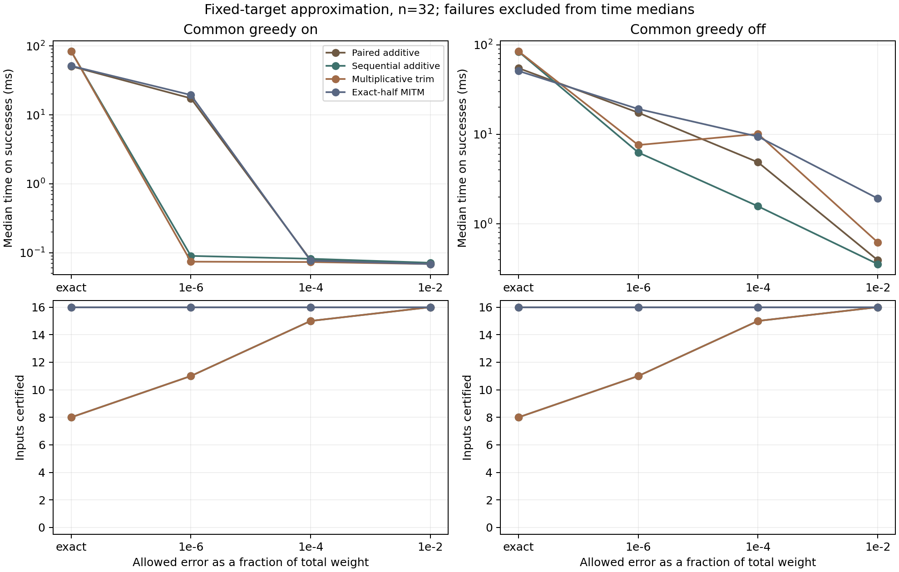

Does Pairing Add Value to Certified Approximation? A Subset-Sum Experiment
Abstract. We report a negative empirical result about the added value of pairing in certified approximate subset sum. Established approximation ideas permit unequal partial sums to share error-bounded representatives. We test whether organizing those representatives into paired summaries yields a further computational benefit over the same additive rule used sequentially. Across \(48\) synthetic instances, the key controlled comparison uses \(n=32\), tolerance \(0.01\%\) of total weight, and no common greedy search. Pairing is faster on \(7\) of \(15\) jointly certified inputs; the median sequential/paired time ratio is \(0.993\). It certifies all \(16\) inputs within the per-summary state cap, while the sequential method certifies \(15\). At \(1\%\) tolerance, a shared greedy search already answers all \(16\) largest inputs. The experiments identify no consistent additional timing benefit from pairing in the key approximation comparison. The negative finding concerns the tested implementations and families; the resource exception and other tolerance regimes remain part of the result.
Motivation and the comparison
If we only need to get close to the target, and know how close, can our framework avoid much of the exponential search?
This remains the motivating question. Approximation is already an established way to reduce subset-sum computation. The added-value question for the coverage framework is more specific: does pairing error-bounded summaries improve on applying the same approximation rule sequentially?
The contribution of this note is a controlled comparison and its negative timing finding. A sequential additive control holds the approximation rule fixed while changing how the summaries are organized. A common greedy search, together with an ablation that disables it, separates early discovery from work saved by the summaries. These controls limit which savings can be credited to pairing. The proofs provide a common correctness contract for the comparison; the polynomial approximation bound is established algorithmic territory.
The main comparison finds no consistent additional timing gain from pairing on jointly certified inputs, alongside one additional input completed within the state cap. This is evidence about an implementation on specified synthetic families. It supplies a useful limit on the framework’s demonstrated benefit without asserting that pairing can never help.
A fixed target and a useful stopping rule
Let \(w_1,\ldots,w_n\) be positive integers, \(S=\sum_iw_i\), and \(t\) an integer target. Subset sums may lie on either side of \(t\). Define \[d^*(w,t)=\min_{x\in\{0,1\}^n}\left|\sum_i x_iw_i-t\right|.\] Exact subset sum asks whether \(d^*=0\). Here the requested output is an actual subset with sum \(z\), together with bounds
\[0\le\ell\le d^*(w,t)\le u=|z-t|, \qquad u-\ell\le\eta,\]
where \(\eta\ge0\) is an absolute integer tolerance. For example, a witnessed distance of \(3\) and lower bound \(2\) certify that the returned subset is within \(1\) of the best possible distance. No further search is needed at tolerance \(1\).
The experiment uses \(\eta=\lfloor\varepsilon S\rfloor\), explicitly scaling the tolerance to the total weight. The guarantee is additive in distance, not multiplicative in \(d^*\). A multiplicative guarantee would require an exact hit whenever \(d^*=0\). On integer inputs, an interval narrower than \(1\) identifies the exact integer optimum.
This objective differs from note III’s probability over random targets. The target here is fixed and the bounds are deterministic. An actual witness with \(u\le\eta\) already supplies the sufficient interval \([0,u]\), even when no full summary has been constructed.
Experimental design
The benchmark uses \(48\) list-target instances: eight synthetic families, \(n\in\{16,24,32\}\), and two fixed seeds. Six families reuse the prior experiments: narrow weights, wide planted solutions, mixed and modular no-solution cases, and the \(41\)-bit unique and repeated-pair hard cases. Two controls add superincreasing weights with one nearest subset and tightly clustered billion-scale weights with many sums near the target. The superincreasing control is deliberately easy for descending greedy; uniqueness is not a hardness claim.
For each input, \(\varepsilon\in\{10^{-2},10^{-4},10^{-6},0\}\) sets \(\eta=\lfloor\varepsilon S\rfloor\). Four implementations solve the same two-sided distance problem:
Paired additive: two half summaries using Proposition 1, followed by the linear pair query.
Sequential additive: the identical additive rule on one full list, isolating the effect of pairing.
Multiplicative trimming: a sequential list using the conventional ratio rule, adapted to retain the full sum range. Its parameter is \(\delta=\eta/(nS)\). Dropping \(y\) above retained \(r\) requires \(y-r\le\delta r\le\eta/n\), so the same observed-gap accounting certifies an additive interval. Comparisons use integer cross multiplication.
Exact-half MITM: exact half summaries with a nearest-pair query, also allowed to stop when a witness already meets the tolerance.
All methods share descending item order, endpoint witnesses, and a cheap greedy witness search. The \(n=32\) inputs also run without that greedy search; witness-based stopping during summary construction remains allowed. Thus a gain from early discovery can be distinguished from a gain due to approximate merging. No learned model or additional branch-exclusion mechanism is used in this first implementation.
Exact optima are computed separately and never passed to a solver. Independent Gray-code enumeration additionally checks all \(n\le16\) inputs. Unit checks cover exhaustive small lists, large integers, both summary invariants, paired queries against explicit Cartesian products, witness reconstruction, and honest resource-limit results.
Successful timings are medians of three uninstrumented runs. Memory is Python-traced peak allocation from a separate run. Generation, oracle labeling, verification, and plotting are excluded from solver timing. A cap of \(65{,}536\) retained representatives per individual summary makes unsuccessful runs explicit. It is not a shared total-memory cap: paired methods retain both halves. A capped run returns valid partial bounds and is not counted as a successful approximation.
The negative finding and its controls
The central result is the comparison with sequential additive trimming, which uses the same approximation rule. With greedy disabled, \(n=32\), and \(\varepsilon=10^{-4}\), pairing is faster on \(7\) of \(15\) jointly certified inputs. The median of the per-input sequential/paired time ratios is \(0.993\), near parity. Pairing certifies all \(16\) inputs within the per-summary state cap; the sequential method certifies \(15\). This combination is the empirical result: no consistent additional timing benefit in the key approximation comparison, with a resource-limit exception in pairing’s favor.
Table 1 reports the largest inputs. Each entry gives median milliseconds over certified outcomes, followed by the number certified out of \(16\). Different success counts imply different sets of inputs in those medians; the technical report also supplies matched per-input comparisons and memory measurements. Very small greedy-only times should not be interpreted as stable differences among compression algorithms.
| Greedy | \(\varepsilon\) | Paired | Sequential | Mult. trim | MITM |
|---|---|---|---|---|---|
| On | \(10^{-2}\) | 0.07 (16/16) | 0.07 (16/16) | 0.07 (16/16) | 0.07 (16/16) |
| On | \(10^{-4}\) | 0.08 (16/16) | 0.08 (15/16) | 0.07 (15/16) | 0.08 (16/16) |
| On | \(0\) | 50.82 (16/16) | 83.57 (8/16) | 83.92 (8/16) | 51.53 (16/16) |
| Off | \(10^{-2}\) | 0.39 (16/16) | 0.36 (16/16) | 0.62 (16/16) | 1.92 (16/16) |
| Off | \(10^{-4}\) | 4.88 (16/16) | 1.57 (15/16) | 10.10 (15/16) | 9.44 (16/16) |
| Off | \(0\) | 54.79 (16/16) | 83.77 (8/16) | 84.52 (8/16) | 50.94 (16/16) |

The sequential additive control makes the negative finding informative. A paired win over multiplicative trimming alone could reflect the error-allocation rule. A shared greedy witness that already meets the tolerance removes the need for every method’s summaries. Controlling these mechanisms reveals whether pairing itself earns an additional timing advantage.
At \(\varepsilon=10^{-2}\), the common greedy search alone certifies every \(n=32\) input. These runs establish that a loose accuracy requirement can make a cheap witness sufficient; they cannot establish an advantage from compression. With greedy disabled and \(\varepsilon=10^{-4}\), paired summaries beat exact-half MITM on \(14\) of \(16\) jointly certified inputs, with a median per-input MITM/paired ratio of \(1.140\). That gain over an exact-summary baseline coexists with near parity against sequential additive trimming. The latter comparison limits attribution of the gain to pairing.
The family detail illustrates where compression can help. Without greedy at \(\varepsilon=10^{-4}\), the two \(n=32\) unique-weight inputs have median paired and MITM times of \(91.6\) and \(173.6\) ms, with traced peaks of \(6.09\) and \(14.45\) MiB. For the mixed no-solution family, the corresponding times are \(0.70\) and \(9.44\) ms. In one such case, a requested tolerance of \(4{,}100\) yields the stronger exact distance certificate \([49{,}623,49{,}623]\): a complementary witness attains the closest boundary of the covering intervals. Approximation need not leave a nonzero gap on every input.
Across all \(1{,}024\) method outcomes, \(80\) hit the per-summary state cap and are recorded as unfinished. Every returned interval, including partial intervals from capped runs, contains the separately computed optimum; every returned subset achieves its claimed distance. Other tolerance regimes matter to the scope of the finding. On the largest exact-answer runs without greedy, pairing beats sequential additive construction on \(6\) of \(8\) jointly certified inputs, with median sequential/paired ratio \(3.256\). The median MITM/paired ratio on all \(16\) exact-answer inputs is \(0.996\): the paired solver then does the same exact half-summary work as MITM. Thus the approximate comparison supports a negative timing finding, while exact half organization and resource limits can still favor pairing.
A summary with a controlled error
For a group of items \(B\), let \(A(B)\) be its attainable sums. Store a set \(R_B\subseteq A(B)\) of witnessed representatives and an error \(E_B\) satisfying
\[\forall s\in A(B),\quad\exists r\in R_B: \qquad r\le s\le r+E_B.\]
Every representative retains a bit mask selecting items in the original input order. The empty group starts with \(R=\{0\}\) and \(E=0\). Adding an item of weight \(w\) forms the sorted merge of \(R\) and \(R+w\). Then scan in increasing order, retaining the smallest value and discarding any later value within \(h\) above the most recently retained value. Equal sums merge without error.
Proposition 1 (Error composition). If the largest actual gap discarded in one trim is \(g\le h\), the updated summary has error at most \(E+g\). For disjoint item groups \(B,C\), the pair sums of their representatives cover all sums in \(A(B\cup C)\) with error \(E_B+E_C\).
Proof. Before trimming, a true sum \(s\) has a candidate \(y\) with \(y\le s\le y+E\). Its retained representative \(r\) satisfies \(r\le y\le r+g\), giving \(r\le s\le r+g+E\). For disjoint groups, add the two representative inequalities. Their witness masks combine by bitwise OR. \(\square\)
Thus approximation changes what coverage must preserve. A summary may forget distinctions among unequal sums, provided the resulting uncertainty remains within a stated budget. This is an extension of note I’s coverage contract; it does not count approximate representatives as exact coverage under the original definition.
From summaries to certified bounds
For one complete summary, use intervals \([r,r+E]\). For two summaries covering disjoint halves of all items, use \[\mathcal I=\{[a+b,a+b+E]:a\in R_B,\ b\in R_C\}, \qquad E=E_B+E_C.\] Let \(\operatorname{dist}(t,I)\) be the distance from \(t\) to an interval \(I\). Choose \[\ell=\min_{I\in\mathcal I}\operatorname{dist}(t,I), \qquad u=\min_{a\in R_B,b\in R_C}|a+b-t|.\] An additional valid witness may lower \(u\) further.
Proposition 2 (Certified gap). These quantities satisfy \(\ell\le d^*\le u\) and \(u-\ell\le E\).
Proof. All attainable sums lie in the interval union, making distance to that union a lower bound. Every representative pair is attainable, making its distance an upper bound. An interval attaining \(\ell\) has a witnessed left endpoint at distance at most \(\ell+E\) from \(t\). The best witness is no worse. \(\square\)
The pair sums need not be enumerated. On sorted half summaries, the conventional two-pointer search finds their nearest predecessor and successor around \(t\) in \(O(|R_B|+|R_C|)\) steps. Those values also determine the closest covering interval: either the predecessor’s interval reaches \(t\), or its right boundary and the successor’s left boundary give the possible minimum distances. This charges for querying the compressed representation without hiding a Cartesian-product construction.
What accuracy buys in the cost model
Choose \(h=\lfloor\eta/n\rfloor\) at each item update. Across the \(n\) updates, arranged sequentially or in two halves, the total error is at most \(nh\le\eta\). A completed summary therefore meets the requested accuracy.
Retained integer sums are separated by at least \(h+1\). A group with total weight \(S_B\) has at most \[1+\left\lfloor\frac{S_B}{h+1}\right\rfloor\] representatives. For \(\eta>0\), this is \(O(1+nS/\eta)\). Linear sorted merging and trimming give the coarse overall bound \[O\!\left(n+\frac{n^2S}{\eta}\right)\] arithmetic operations, including a linear final pair query. Sums have \(O(\log(S+1))\) bits and witness masks have \(O(n)\) bits, so accounting for arithmetic and mask costs preserves polynomial dependence on encoded input length and inverse actual normalized tolerance \(\eta/S\). The bound does not apply at \(\eta=0\).
This is established approximation territory. Conventional multiplicative list trimming already gives a fully polynomial approximation scheme for maximizing a subset sum below a target [1]. More advanced approximation algorithms are studied by Bringmann and Nakos [2]. The present bound explains a concrete coverage mechanism; it is not a new general complexity result or a claim to match the strongest published algorithms.
What the negative finding establishes
In the key controlled approximation comparison, grouping error-bounded sums into paired summaries does not yield a consistent additional timing benefit over the same additive rule used sequentially. Approximation can make coverage cheaper without pairing being the source of the savings. The common witness search and sequential control make that attribution testable. This negative empirical result is the main contribution of the note.
The established approximation guarantee remains useful: it supplies valid bounds and permits cheaper representations at fixed normalized accuracy. Correct certification establishes that the compared methods meet the same accuracy contract. A separate runtime comparison is needed to establish any added computational benefit from their organization.
The scope is \(48\) small synthetic instances, two seeds per family and size, specified tolerances, and a per-summary state cap. These are descriptive timing results, not an impossibility theorem or a statistical test establishing equal performance. Pairing completes one additional input in the key comparison, and exact half organization can outperform a full sequential list. The evidence limits the framework’s demonstrated additional timing benefit from pairing in approximation; it does not support a blanket claim that approximation, certification, or pairing adds nothing.
References
University of Illinois, CS 473: Theory II. Approximation Algorithms III, September 24, 2015. https://courses.grainger.illinois.edu/cs473/fa2015/w/lec/slides/10_notes.pdf.
Karl Bringmann and Vasileios Nakos. A Fine-Grained Perspective on Approximating Subset Sum and Partition. SODA 2021. https://arxiv.org/abs/1912.12529.
Series and reproducibility. Notes I–III introduce certified coverage, test exact subset-sum pairing, and bound random-target reachability. Specification, scripts, full inputs, witnesses, raw measurements, and figures for this note are in subset-sum/APPROXIMATION_SPEC.md and subset-sum/APPROXIMATION_RESULTS.md at https://github.com/jonland82/exponential-search-spaces.